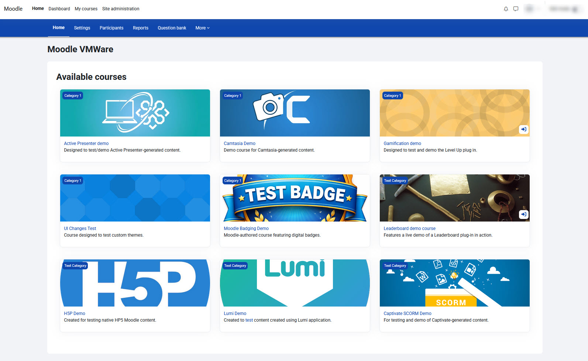
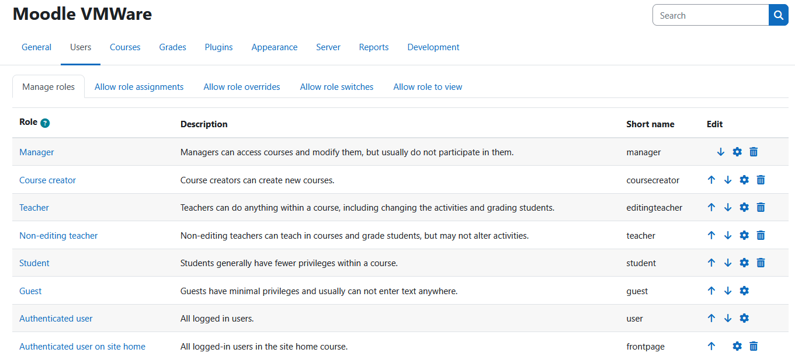
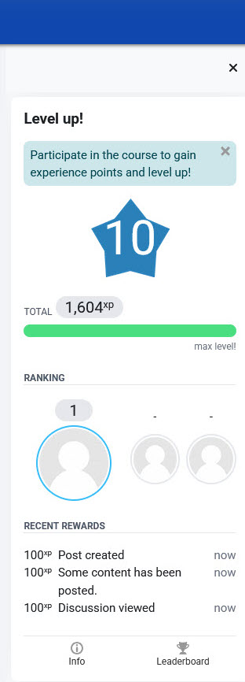
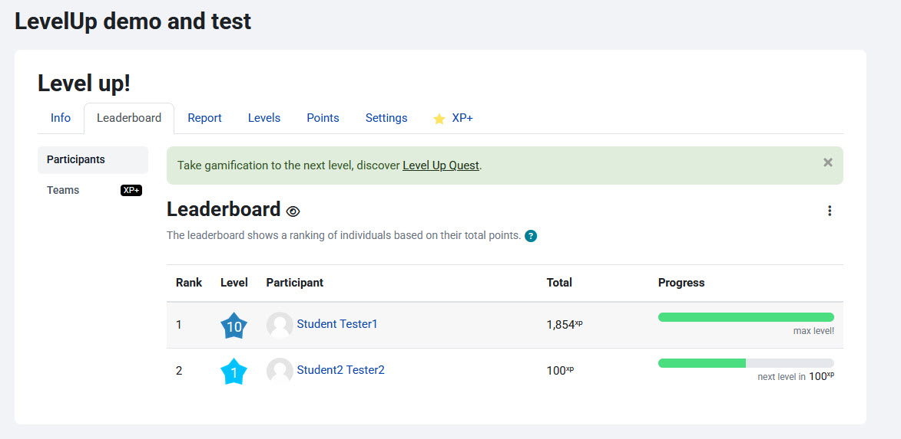
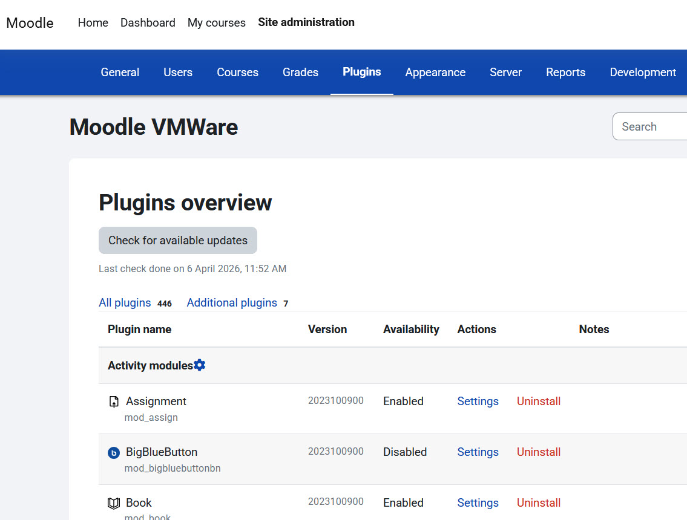
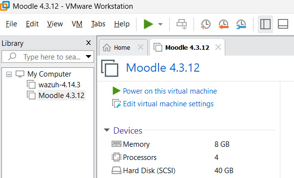

Self-Hosting a Learning Management System
Role: LMS Administrator & Network/Systems Engineer
Tools: Moodle Ubuntu Server LAMP Stack LMS Admin
Executive Summary
I successfully self-hosted a Moodle LMS instance within my home technology lab, executing a true end-to-end deployment lifecycle. By engineering a virtual machine environment using Linux/Ubuntu Server hosted on Windows VMWare, I established a robust sandbox for testing enterprise-grade educational technology. This project demonstrates a holistic approach to digital learning—managing server-side stability, LMS configuration, pedagogical tool integration, and rigorous quality assurance testing.

Platform Administration & Instructional Design
1. Multi-Role User Governance
Designed a comprehensive user hierarchy (Admin, Teacher, Student) and performed role testing to validate that permissions and data privacy were optimized for each persona.

2. Course Development & Gamification
Created structured learning paths featuring digital programs. I engineered a leaderboard and a Digital Badging system to incentivize progress, creating a verifiable credentialing ecosystem.
The LevelUp plugin creates a gamified learning experience, rewarding students with XP points as they engage with course activities. From the student's perspective, progress is visible at a glance — including their current level, total XP, ranking among peers, and a live feed of recent rewards.
For this proof of concept, I configured the XP point rules for a variety of activities within a course. Realistic examples include a student completing an assignment and/or viewing or creating a discussion board post.
By testing from the admin and student perspectives using the personas I created, I was able to verify that instructors and students received real-time updates resulting from actions within a course designed to trigger gamification-related elements.
Students completing activities within the course that are designated by the instructor to earn XP points see real-time updates not only to their individual profile and point total, but also updates their progress and ranking relative to the course leaderboard.
Instructors and admins can adjust the points awarded for designated activities in real time; they can also add additional point-generated activities as needed.
Although this section focuses on students earning XP points for activities within a course, the LevelUp plugin can also be applied accomplishments such as earning digital badges for course completion.


3. Plugin Integration
Identified and configured community plugins to extend Moodle’s core functionality, conducting compatibility testing for advanced interactive content.

Technical Infrastructure & Systems Engineering
Managing the "under-the-hood" requirements to keep the LMS online involved full-stack orchestration:
[Task] Extending LVM partitions for storage scaling
[Debug] Resolving PHP 8.3 / Moodle 4.3 versioning mismatch via XML logic
I executed advanced hardware scaling, including resizing virtual disks and manual server-side performance tuning to ensure high-availability service delivery.

Authoring & Interoperability
To ensure a seamless learner journey, I used the platform to test and publish content created with a variety of industry-standard tools, including H5P, SCORM, Adobe Captivate, Camtasia, Lumi, and Active Presenter.
Core Competencies
- LMS Governance: Mastery of site administration, user enrollment, and plugin lifecycles.
- Technical Problem Solving: Navigating complex backend environment logic and database schemas.
- UX/UI Validation: Commitment to testing the learner's journey across multiple roles.
Outcome
By managing the entire lifecycle of this Moodle instance—from the command line to the course dashboard—I have developed a unique ability to ensure that technical stability always serves the ultimate goal of effective instructional delivery.